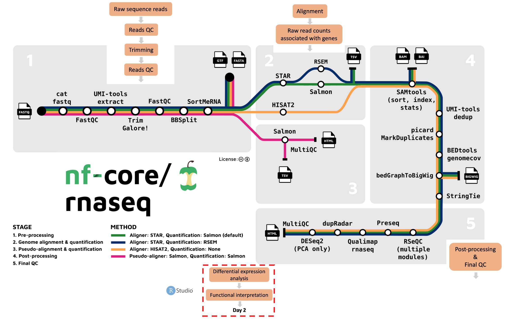

Day 1 wrap up
Today we answered a lot of questions:
- What is RNA sequencing and what are it’s main applications?
- What are the main steps we perform to process raw RNA-seq data to raw gene counts?
- How can workflow management tools make running bioinformatics workflows easier?
- How to run the nf-core/rnaseq pipeline and interpret its outputs?
- What are the important features of the nf-core/rnaseq pipeline?
On day 2, we will learn about differential expression analysis and functional annotation of differentially expressed genes. We’ll still be working on Nimbus, but instead of working on the command line, we’ll be using R/RStudio.

Course survey!
Please fill out our course survey before you leave! Help us help you! 😁
See you tomorrow! 😎
All materials copyright Sydney Informatics Hub, University of Sydney